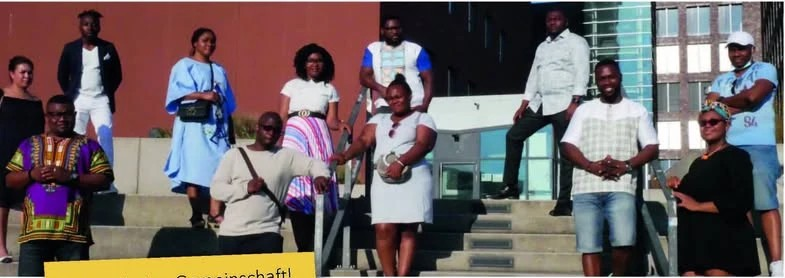

Aktuelles
Bilder & Videos
Eindrücke aus Wahlkampf, Festen und Projekten. Mehr Fotos und Videos finden Sie auf unserer Facebook-Seite.
Fotos

Foto von Facebook einfügen
Foto von Facebook einfügen
Foto von Facebook einfügen
Foto von Facebook einfügen
Foto von Facebook einfügen
Videos
Video von Facebook einbetten
Wahlaufruf 2020
Geh wählen! · Vote! · Allez voter!
Video von Facebook einbetten
Afrika-Tag
Musik, Tanz und Begegnung in der Innenstadt.
Video von Facebook einbetten
Aus dem Vereinsleben
Weitere Videos auf Facebook.